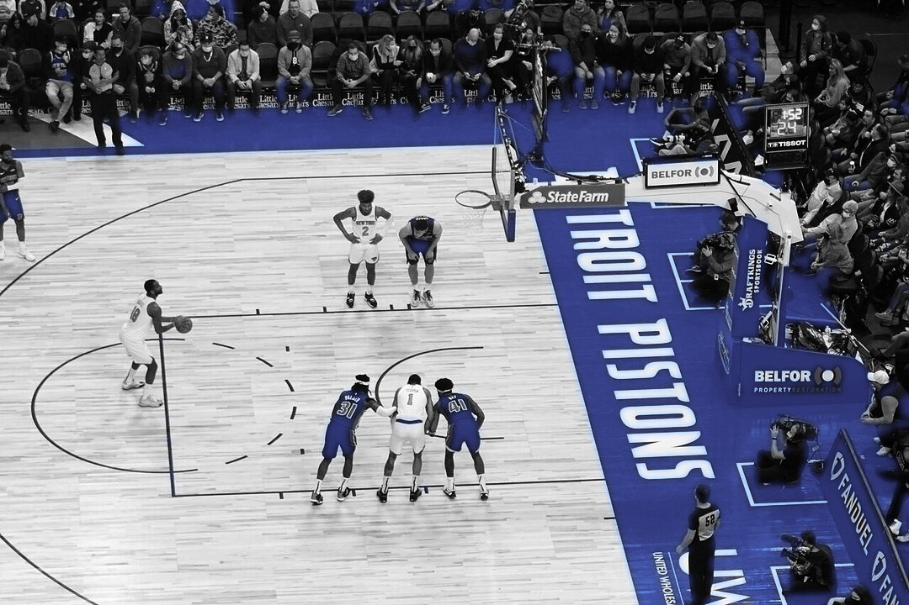
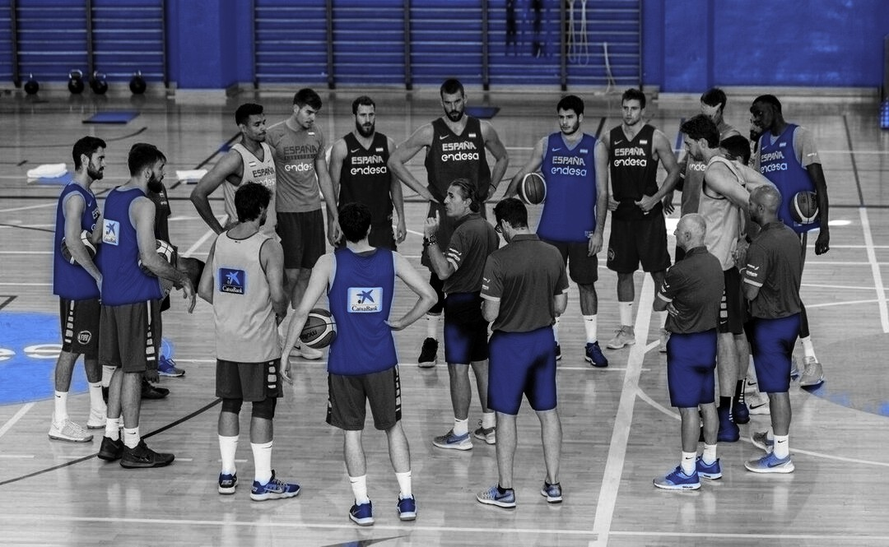
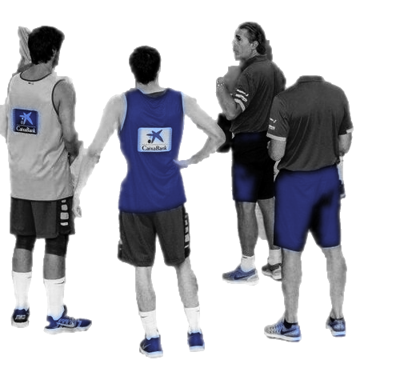

SEMANA 1SEMANA 2SEMANA 3
0 CANASTAS FUERA DE LA ZONA
VERANO · CHARLOTTE, CAROLINA DEL NORTE
2026

PARTIDO DE LA NBA · FOTO: MICHAEL BARERA, CC BY-SA 4.0
SU PADRE
DELL CURRY
16 temporadas en la NBA
«It was the worst summer of my life»
STEPHEN CURRY · THE RINGER, 2019
Nº 1
MÁS TRIPLES EN LA HISTORIA DE LA NBA · DESDE EL 14/12/2021

ENTRENAMIENTO · FOTO: DIARIO DE MADRID, CC BY 4.0
«Vas a fallar más unas semanas. Es normal.»
FOTOS: M. BARERA (CC BY-SA 4.0) · DIARIO DE MADRID (CC BY 4.0) · SILUETAS: RECREACIÓN